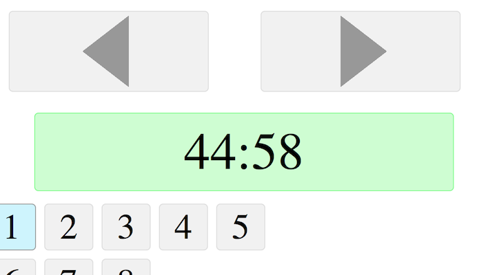

Node Slideshow comes with the jQuery Chili Plugin built in. You can check the recipe folder for language support.
Javascript
window.onload = function(){
alert('Hello World!');
};
PHP
echo '<p>Hello World!</p>'
MySQL
INSERT INTO `messages` VALUE ('Hello World!');
This image was taken off the coast of California in a cliff side rest stop on Highway 1.
Corey Hart - June 2008
...embed code here...
The Master Controller was built for mobile devices, but will work within browsers as well. To enable it, run the server.sh shell script provided.
$ cd node-slideshow $ ./server.sh Socket created on port 8124 Master Controller Enabled at http://localhost:8125/ 10 Slides
The stdout tells us a few things:
The master controller also comes with a countdown timer to keep track of time left during a presentation. To enable, you need to run the starttime.sh shell script in the root directory.
Note*: This must be done after the server has started.
$ cd node-slideshow $ ./starttime.sh Presentation Timer Started - 45:00 left
User's viewing the slideshow have their own personal keyboard controls.
Next Slide: Right Arrow, Spacebar, Enter.
Previous Slide: Left Arrow & Backspace.
The slideshow/ directory is also completely independent from the rest of the project, so it can be zipped up and passed around as needed.
$ cd node-slideshow $ zip -r slideshow.zip slideshow/ adding: slideshow/ (stored 0%) adding: slideshow/Config.js (deflated 26%) adding: slideshow/fonts/ (stored 0%) adding: slideshow/fonts/Chunkfive-webfont.eot (deflated 37%) adding: slideshow/fonts/Chunkfive-webfont.svg (deflated 61%) ... $ ls master node revar.sh server.sh slideshow slideshow.zip starttime.sh
/**
* Node Slideshow [VERSION]
* [DATE]
* Corey Hart @ http://www.codenothing.com
*/
this.Config = {
// Disable for distribution, and final check for websocket
enableSocket: true && ( 'WebSocket' in this ),
// Websocket connection
host: 'localhost',
port: 8124,
// Time takes to transition between slides
transitions: 200
};
/**
* Node Slideshow [VERSION]
* [DATE]
* Corey Hart @ http://www.codenothing.com
*/
this.Config = require('../slideshow/Config').Config;
// Port for master server
this.Config.masterport = 8125;
// Time (in milliseconds) for countdown timer
this.Config.timed = 45 * 60 * 1000;
// When to turn on warning color for countdown timer (in milliseconds)
this.Config.timeWarning = 15 * 60 * 1000;
Thanks for your interest. Please send all feedback or questions to corey@codeNothing.com.
You can also tweet me: @codeNothing.